Environment Concepts
First concept for tutorial art
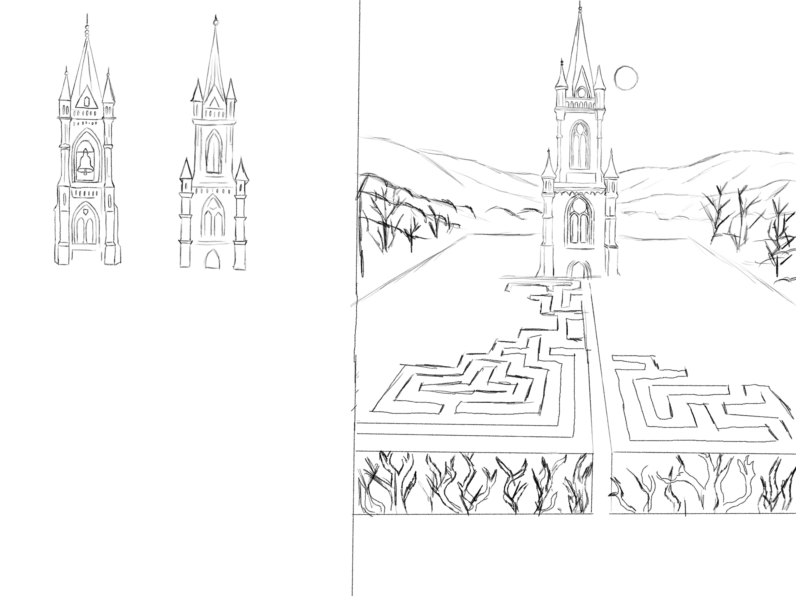
Concepts for watchtower)

Finalized tutorial art
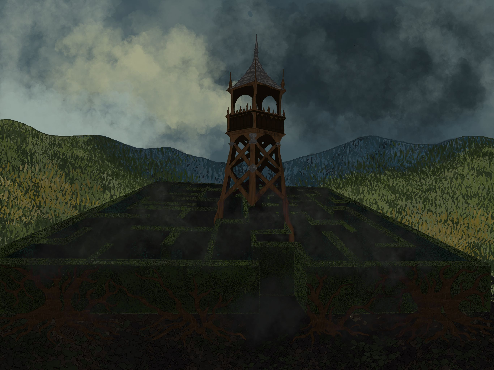
First shape layout for main level (main level art in progress)
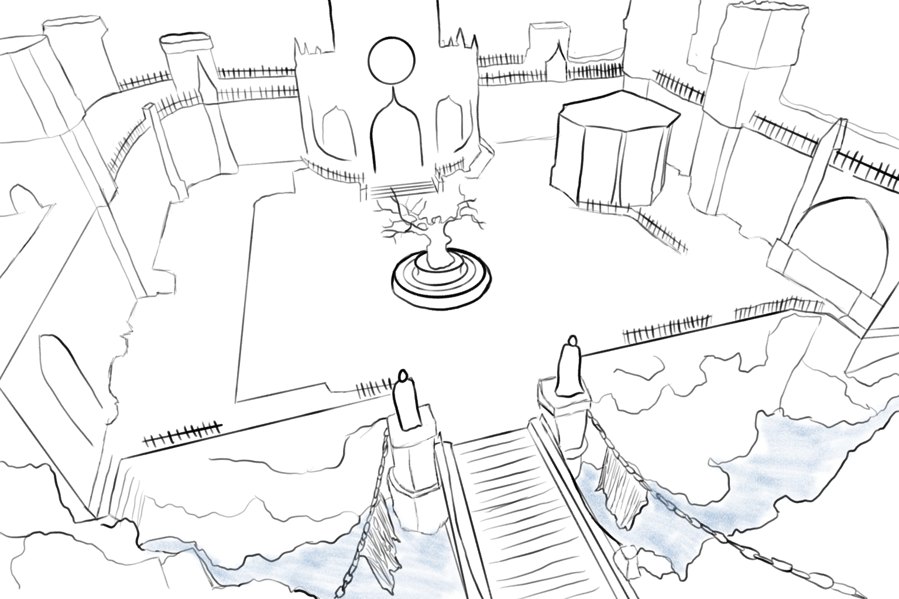
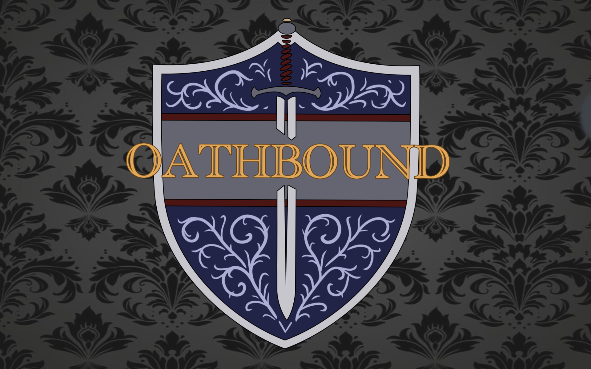
Lead 2D Artist
Unreal Engine 5.5.4
25
Environment & Visual Development
Summer 2025- Current
A third-person, cooperative stealth-action heist game set in a medieval fantasy world where players take on the roles of rogue-like characters infiltrating castles to steal magical artifacts, treasure, and secrets — either solo or in a coordinated team of thieves.
On Vicebound Kingdoms, I worked primarily as a concept artist focusing on environment sketches, architectural concepts, and item asset creation. My work helped establish the visual tone of environments and structures used throughout the project. I created concept sketches used as reference for modeling and environment building, and explored different visual directions through iterative sketching and design variations.
First concept for tutorial art

Concepts for watchtower)
Finalized tutorial art

First shape layout for main level (main level art in progress)

First Draft Weapons
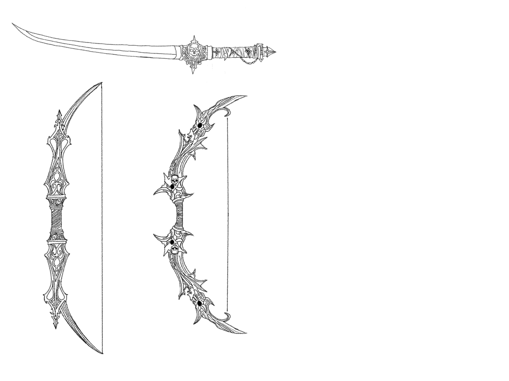
Sword Angles
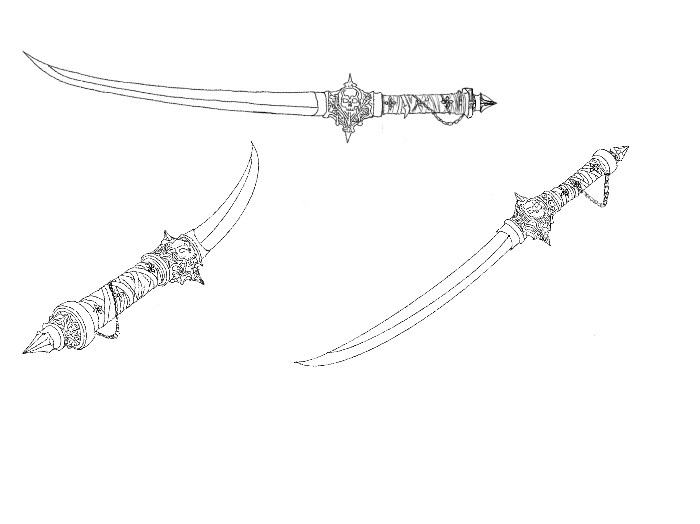
Finalized sword concept sheet

Concept Sheet for Eye Camera
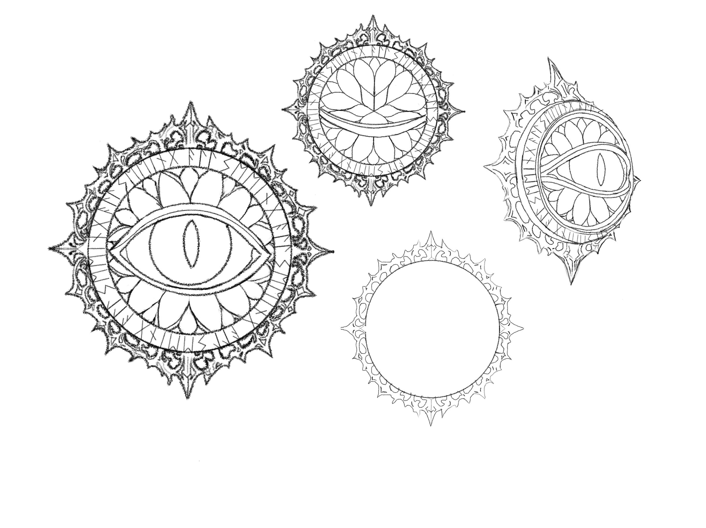
New frame for Corner Camera
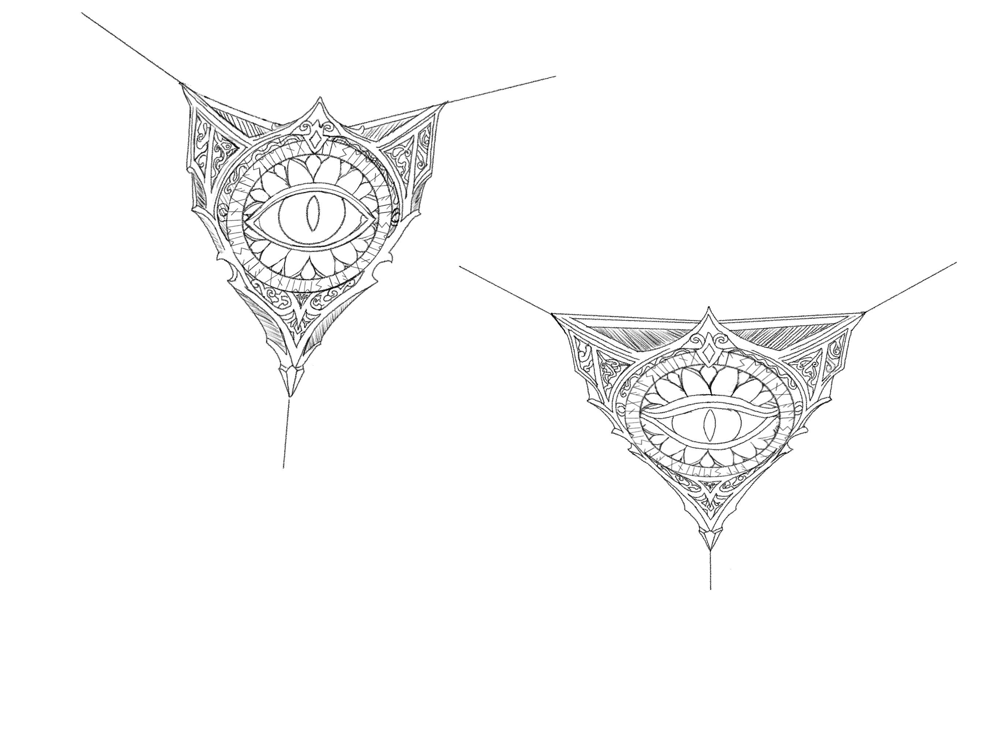
Engraving example for Chest
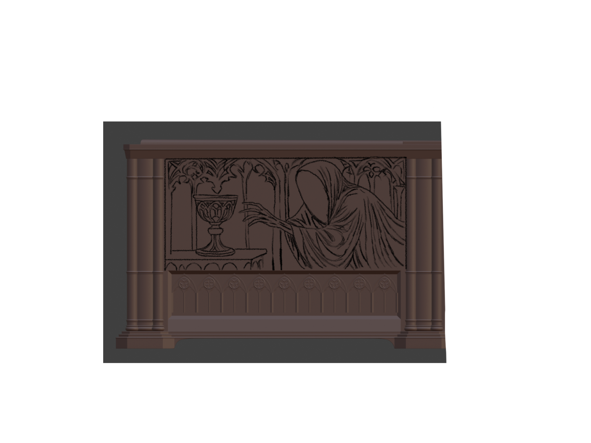
Chest Engraving Concepts

Logo Ideas
Logo Renders and Color Play
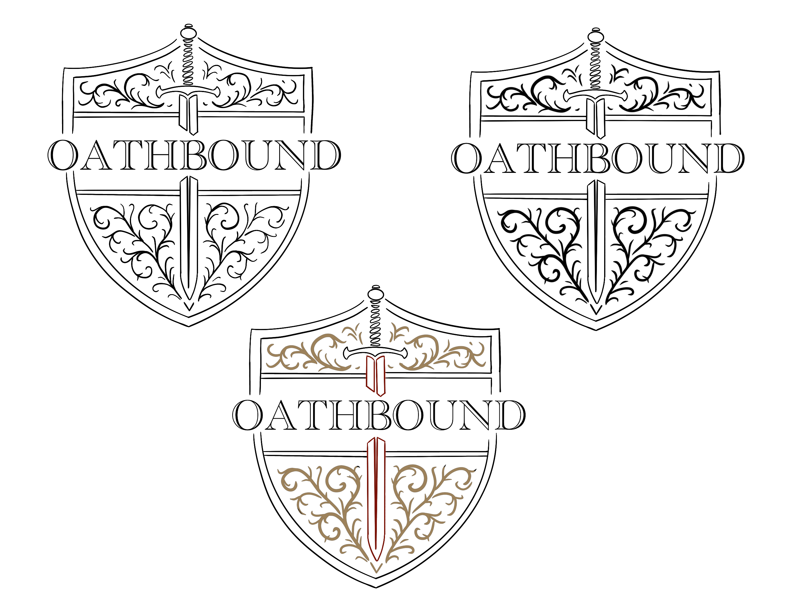
Kingdom Emblems Draft 1
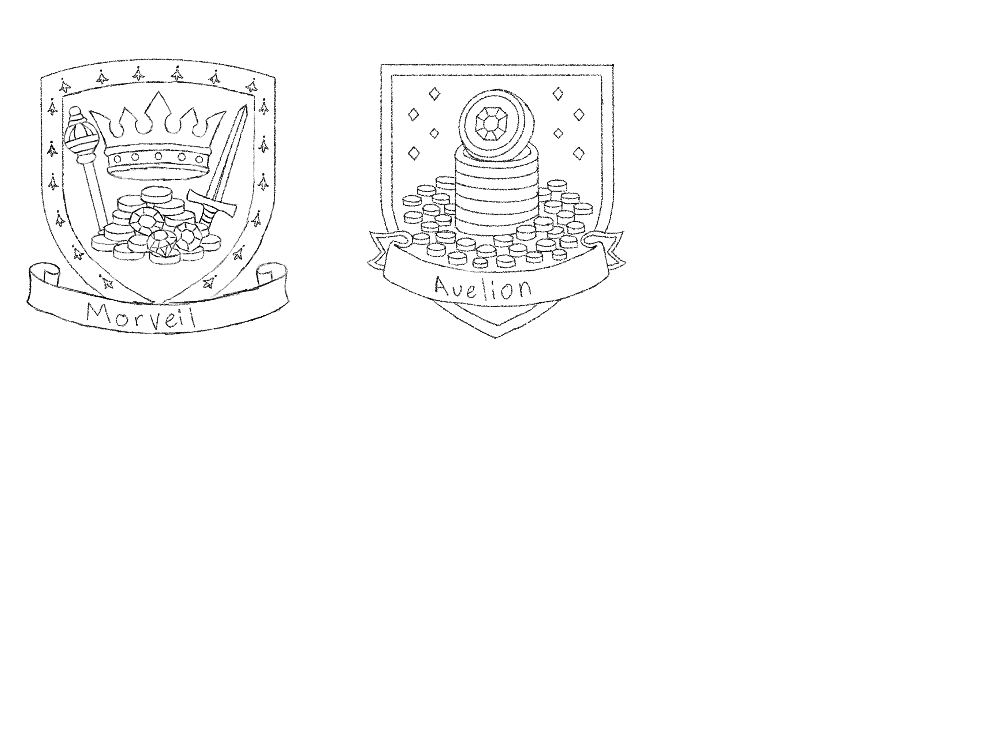
Kingdom Emblems Draft 2
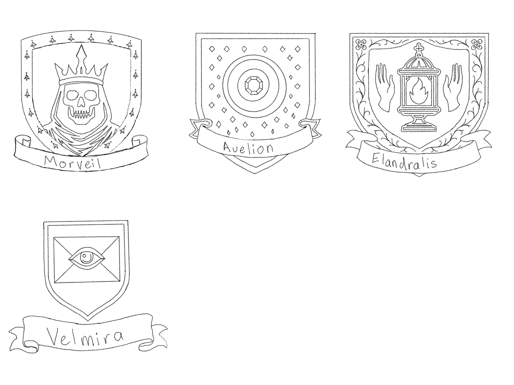
My concept process typically started with quick exploratory sketches to establish shape language and structure. From there, I refined promising ideas into more readable environment concepts and architectural designs. These concepts were used as references for modeling and environment layout within the game engine.